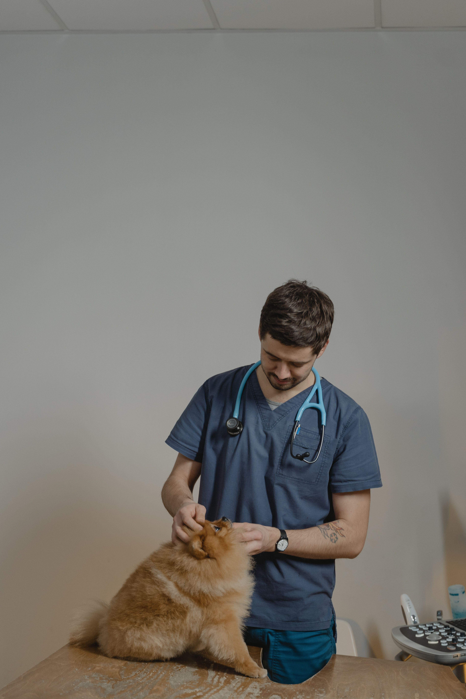
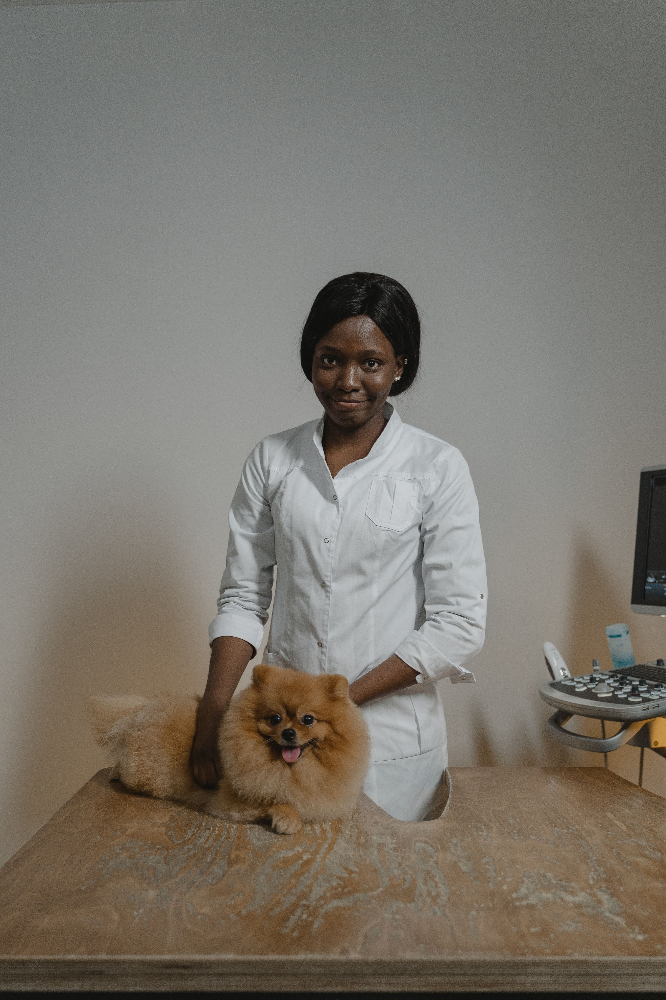
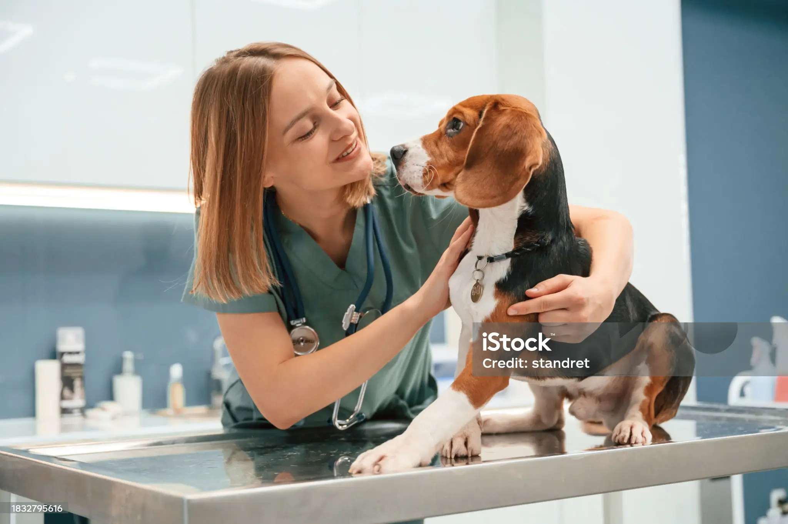
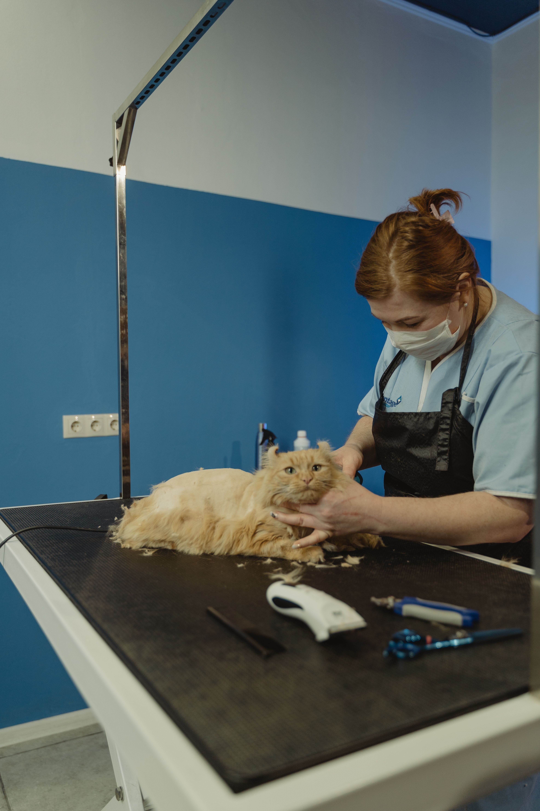

Bienvenidos a Veterinaria La Mary
En nuestra clínica veterinaria, nos dedicamos a brindar atención de calidad y cuidado amoroso a tus mascotas. Nuestro equipo de profesionales altamente capacitados está comprometido con la salud y el bienestar de tus compañeros peludos.
Ofrecemos una amplia gama de servicios, desde consultas médicas y vacunaciones hasta cirugías y tratamientos especializados. Nos enorgullece proporcionar un ambiente acogedor y seguro para tus mascotas, donde se sientan cómodas y reciban la atención que merecen.
En Veterinaria La Mary, entendemos que tus mascotas son parte de tu familia, y nos esforzamos por brindarles el mejor cuidado posible. Confía en nosotros para mantener a tus amigos peludos felices y saludables. ¡Visítanos y descubre la diferencia de nuestro enfoque compasivo y profesional en el cuidado de tus mascotas!
Nuestros Profesionales

Dra. Mansilla Luciana
Medicina ClínicaEspecialista en atención clínica y medicina preventiva de pequeños animales.

Dr. Oviedo Alejandro
Cirugía VeterinariaProfesional dedicado a cirugía general y atención integral de perros y gatos.

Dra. Ayelen Boock
DermatologíaAtención y diagnóstico de enfermedades dermatológicas en animales de compañía.

Dra. Aylen Kogut
PeluqueríaPeluquera profesional especializada en el cuidado y estética de mascotas, brindando servicios de corte, baño y estilizado.